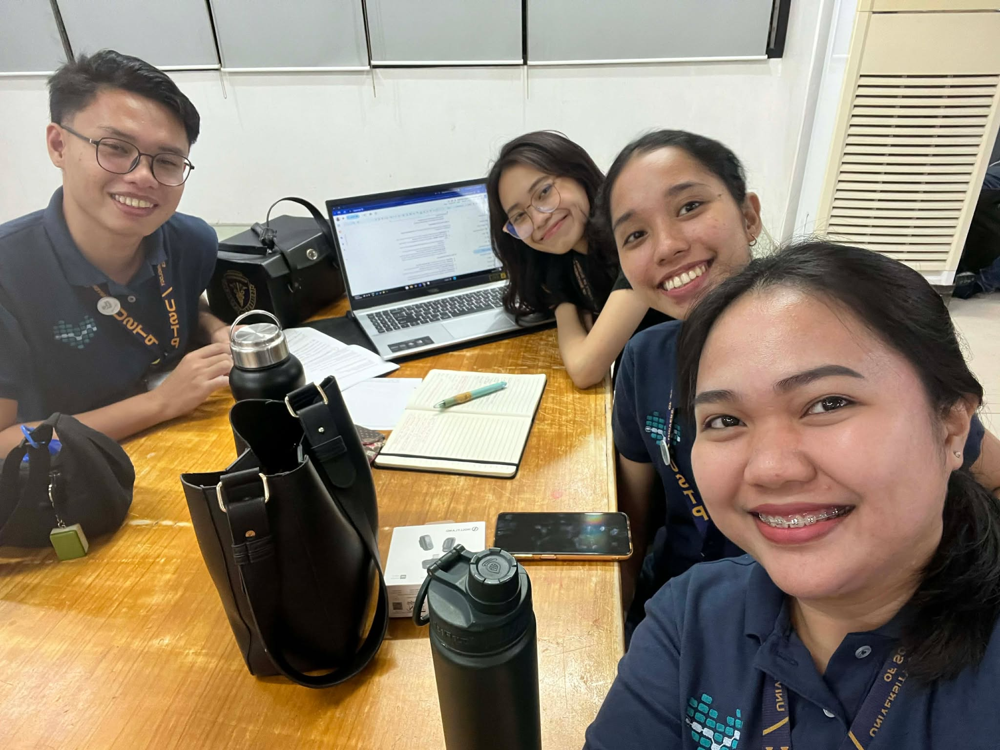

Phase 2: Narrative Report#
November 17 - 23
Report on data collection and preprocessing.
This week, our team planned and outlined the full preprocessing and experimentation pipeline based on last week’s discussions. Using the UCBHI respiratory sound dataset, we began with exploratory data analysis (EDA) to assess data quality and identify the necessary preprocessing steps.
From EDA, we observed that each audio file often contains multiple breathing cycles—consistent with prior studies showing that lung sound recordings typically include several inhale–exhale phases within a single sample. We also found that the most frequently occurring duration in the dataset is around 20 seconds, making it the most natural and representative length for standardization. Based on this insight, we decided to preprocess all recordings into uniform 20-second segments through slicing or looping.
In addition to this, we generated a second variant using 6-second segments. Several studies indicate that 6 seconds is sufficient to capture full breathing cycles and detect key respiratory events such as wheezes and crackles. Comparing both lengths will help us determine which duration provides a better balance between computational efficiency and diagnostic information. All audio files were standardized to a 16 kHz sampling frequency, following recommended practices in respiratory sound analysis.
During dataset inspection, we noted the presence of class imbalance, particularly when looking at the distribution of sub-classes. However, at the broader level, the normal vs. abnormal ratio is already relatively balanced, so we intend to keep this overall ratio intact to maintain the natural dataset structure. Our experiments with class balancing—through downsampling and oversampling—were conducted not to change the main normal–abnormal distribution but rather to explore how increasing or redistributing samples within specific abnormal categories (and ensuring the normal class is evenly represented) may influence model performance.
To investigate this, we designed experiments involving:
Downsampling to the smallest subclass to achieve equal subclass distribution while maintaining the overall normal–abnormal ratio, and
Oversampling via augmentation, especially for minority abnormal categories, to test whether expanded representation improves sensitivity without distorting the dataset’s natural proportions.
These balancing strategies form part of our broader experimentation plan and will be evaluated for their effect on training stability and classification performance.
In our initial model trials, we tested the three architectures selected last week. Results showed that the Temporal Convolutional Network (TCN) was significantly more computationally efficient. While other models required several hours per experiment, the TCN completed each run in about 30 minutes, making it the most practical option given our limited resources. Because of this, we decided to pivot our objectives: instead of comparing three models, we will focus entirely on TCN and conduct more extensive experimentation on its layers, architecture variations, and hyperparameters.
Lastly, we outlined the experimental plan for next week, which includes:
Testing architectural variations of the TCN
Systematic hyperparameter tuning
Comparing the performance of 20-second vs. 6-second input lengths
Evaluating class-balance strategies while preserving the natural normal–abnormal ratio
